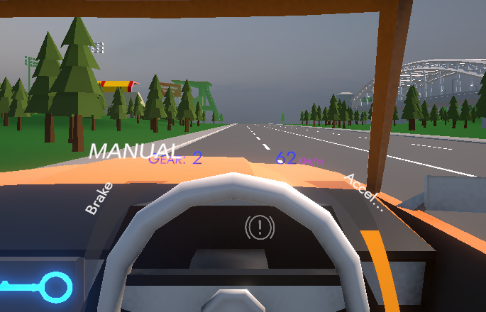
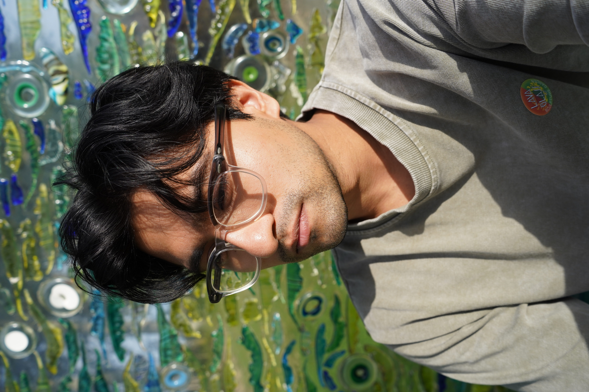
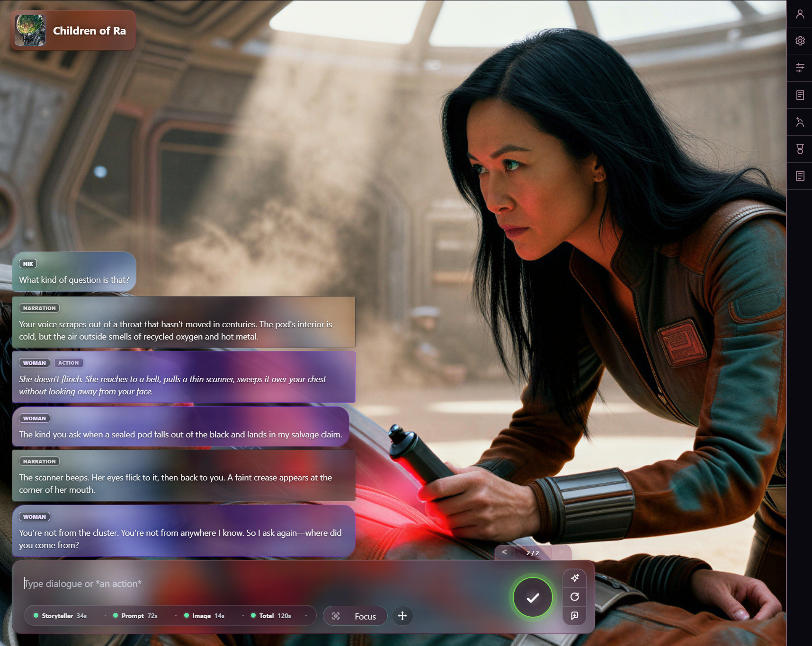
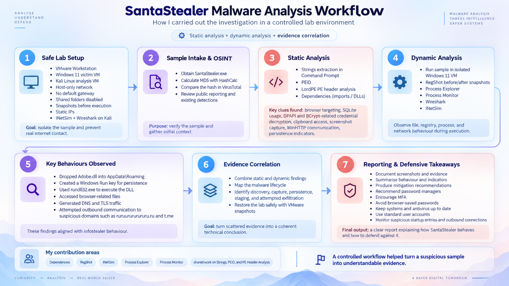
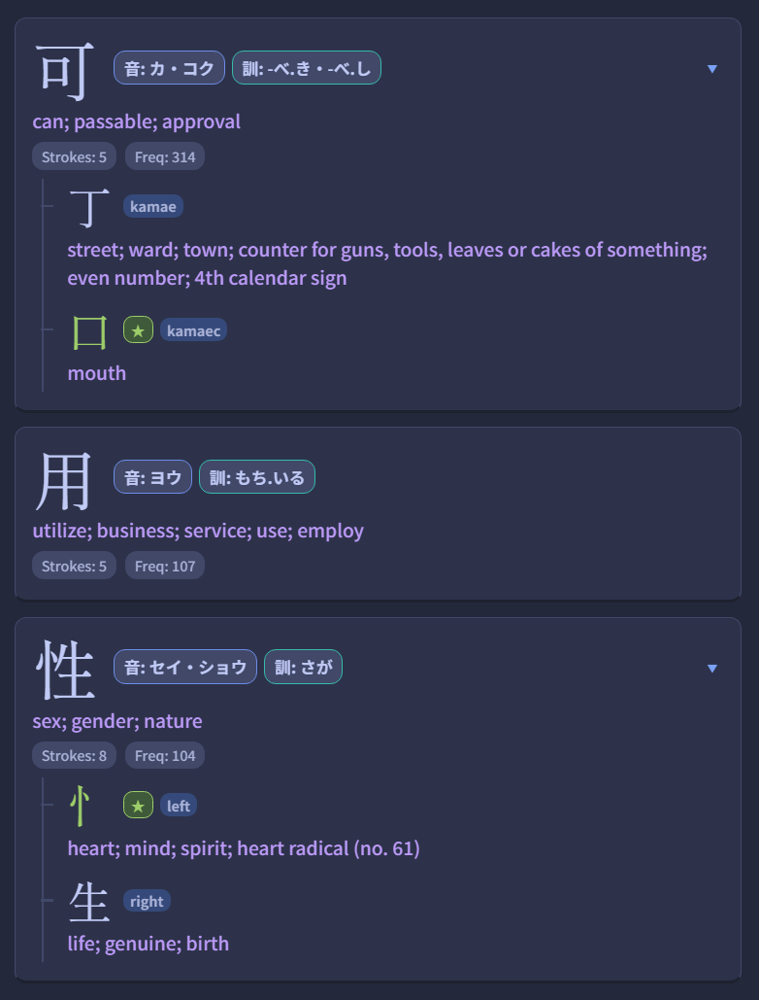
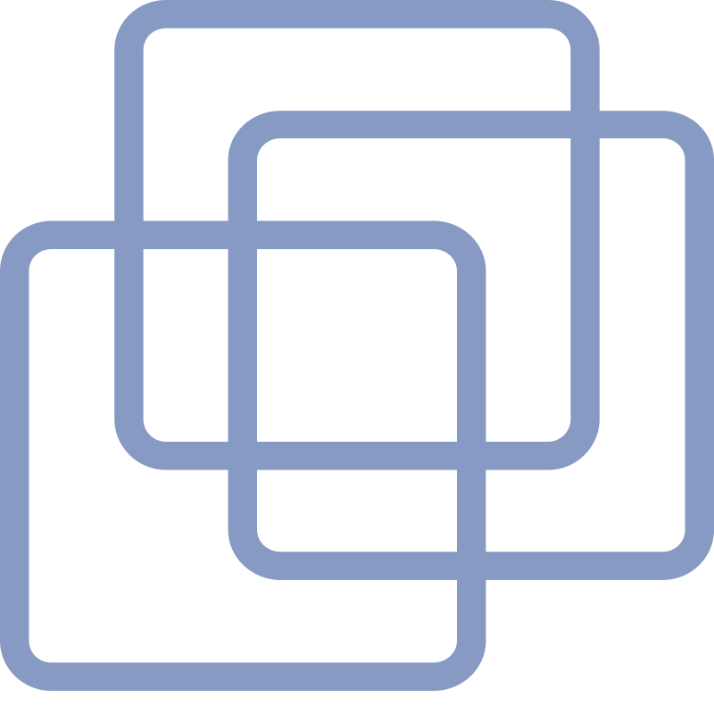
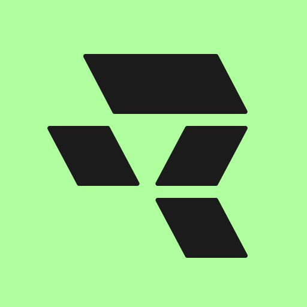
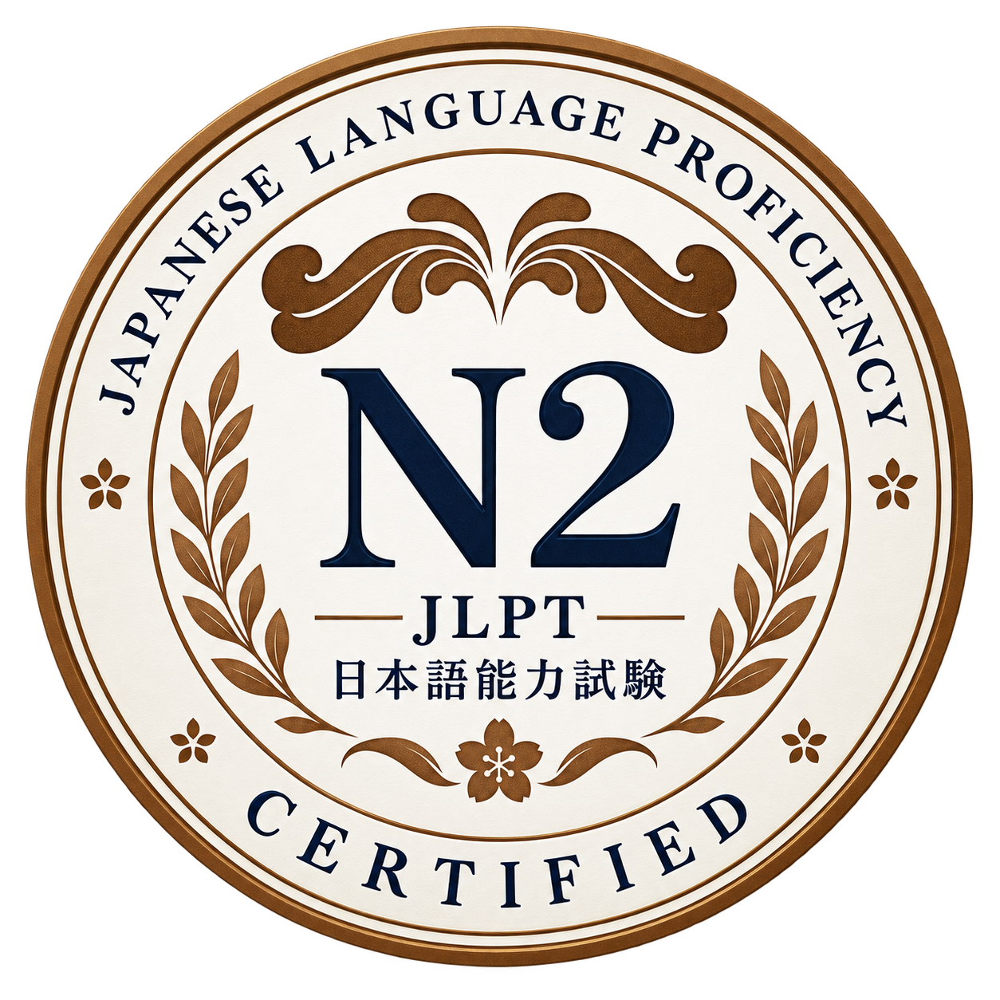
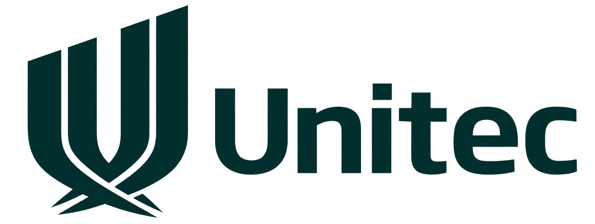
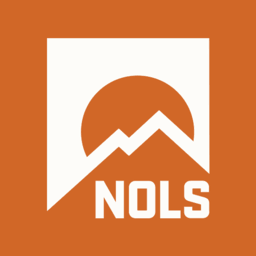

TEAM CAPSTONE / VR DEVELOPMENT01
DriVR↗A look inside the project

DriVR
Making virtual driving feel right in the real world.
Based in Auckland, New Zealand
Hi, I’m Nikhil. I investigate how things work, then build things that matter. Somewhere between cybersecurity, software, and Japanese.
↘
I’m in my final semester of Computing Systems at Unitec, specialising in cybersecurity and networking. My internship at Spark New Zealand taught me to look beyond an alert and build a conclusion from evidence.
Outside the coursework, I build AI storytelling software and tools for learning Japanese. Whether it’s the pieces of a kanji or a steering wheel that doesn’t behave, I like following a question far enough to make something useful.
A few investigations, experiments,
and ideas made real.

Making virtual driving feel right in the real world.

A story you can step into.Generative stories and images, brought into one experience.

Following the evidence behind an information stealer.

Less repetitive work. More time to actually learn Japanese.
The tools I reach for to investigate,
create, and keep learning.

VMwareLinux
RunwareRunPodComfyUIAnkiJiraConfluenceFrom outdoor leadership to security operations and a new language. Different settings, the same desire to learn.

2026 · Next stop: N1
少しずつ、着実に。
Specialising in cybersecurity and networking. Malware analysis, digital forensics, and a hands-on VR capstone. Expected completion: 22 November 2026.
Weekly workshops, guided exercises, and simulated investigations using Splunk and Microsoft Defender. Learned to put alerts in context and shadowed analysts working on live tickets.
Ethical hacking, network security, cryptography, data analysis, and cybersecurity management.
The foundations: programming, database design, user interfaces, and quality assurance.

Expedition-based training in team leadership, risk assessment, and wilderness medicine. A lasting foundation for responsibility and calm decisions.
A security role, an interesting project,
or a question worth exploring. Let’s talk.